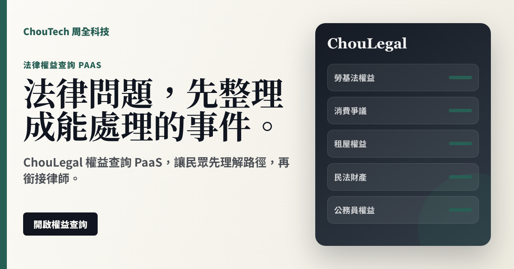

勞動、消費、租屋、財產、公務員權益五大方向集中入口。
Sales Positioning
可銷售方向：流量入口、律師合作版位、內容合作、企業員工福利入口。
把勞動、消費、租屋、財產與公務員權益，整理成可理解的下一步。
客戶現在的痛點
- 使用者不知道自己是哪一種法律事件
- 資料散落在聊天紀錄、發票、契約與通知裡
- 要找律師前，連問題怎麼說都不清楚
買了之後得到什麼
- 先整理事件類型與資料清單
- 把可試算的金額和日期先拆出來
- 需要時銜接律師媒合，不把平台內容包裝成法律意見
Product Page
產品頁介紹。
把使用者事件包整理好，再提供合作律師或版位合作。
可與社群、媒體、企業員工福利入口合作，承接法律問題流量。
PaaS Offer
用 PaaS 的方式賣：開通、訂閱、建立工作區。
主軸是產品自助使用；需要客製合作時，也以平台合作、模組或 API 工作區表達。
民眾權益查詢維持免費，建立可信任流量入口。
律師、內容方、社群與企業福利合作，按版位或合作模式洽談。
企業或機構可設定專屬入口，把員工或會員導向指定權益路徑。
Image Ad
可直接拿去推銷的圖片廣告。
ChouLegal 權益查詢 PaaS，讓民眾先理解路徑，再銜接律師。
